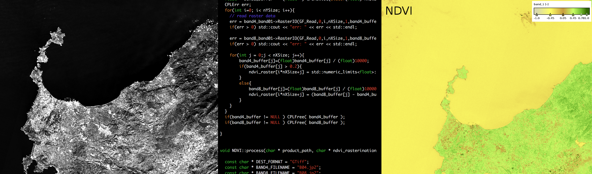

Welcome to Ichnosat¶
Ichnosat is an Open Source plugin based platform to download an process satellite data written in Python and C++, designed and developed by Raffaele Bua for Sardegna Clima NPO. Downloads and Processes are multithreaded and schedulable. The Platform is configurable and the processor is extendible via C++ plugins.
Docker containers are included in the package, facilitating the installation and running.
Source code is released under the MIT license and it is available on GitHub.
The downloader gets automatically products from Sentinel-2 on AWS portal. This downloader is multithreaded and fully customizable.
The processor receives products from downloader and processes products via C++ plugins. In the current version the plugin available processes the NDVI exploiting GDAL library.
Ichnosat processor is multithreaded, extendible via C++ plugins and customizable.

- Cross-platform support
- Ichnosat Platform provides the Docker containers
- Downloader
- Get Sentinel-2 data from Sentinel-2 on AWS
- Customizable properties:
- Tiles to download
- Files to download for each tile
- Date interval (Sensing time)
- Number of parallel downloads in the same time
- Processor
- Plugin based: the processors are extendible C++ Shared Libraries
- Customizable properties:
- Number of parallel processing in the same time
- Ichnosat Platform
- Automatic plugin compilation
- HTTP APIs to manage the system
- Customizable cron for scheduling run
- Graphical User Interface (Web based)
- Run Downloader and Processor
- Show product lists
- Compile plugins
- Manage Database
- Testing
- Unit tests run at Platform start-up
- API-documentation
- Autogenerated API-documentation via Sphinx from comments in the code (PEP 257 Convention)